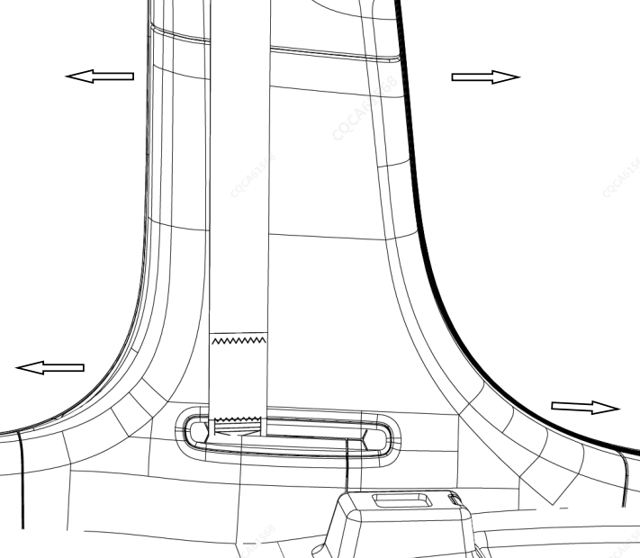
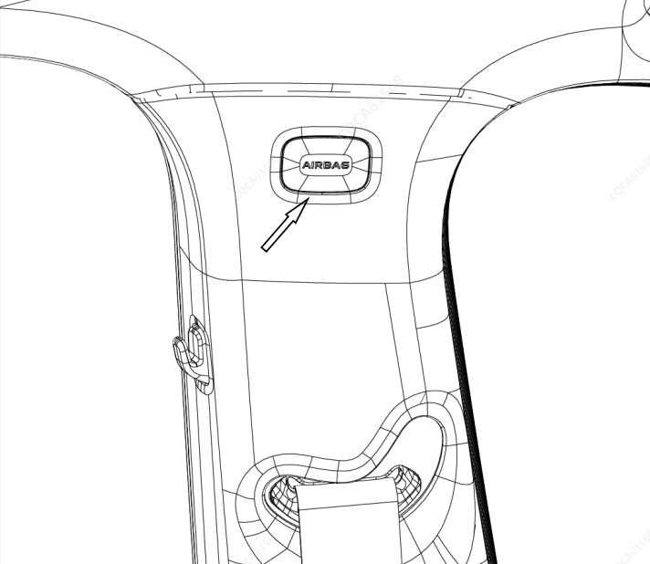
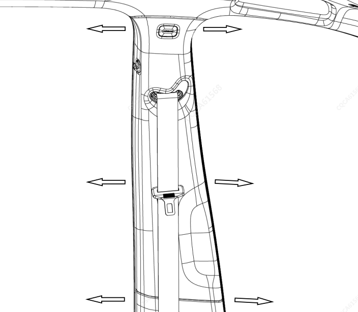

Снятие
Демонтировать декоративную панель порога передней двери (левую). См. Снятие и установка узла декоративной панели порога передней двери
Демонтировать декоративную панель порога задней двери (левую). См. Снятие и установка узла декоративной панели порога задней двери
Демонтировать уплотнители проемов передней и задней дверей (левые). См. Снятие и установка уплотнителя проема передней двери, см. Снятие и установка уплотнителя проема задней двери
Вручную потянуть нижнюю внутреннюю облицовочную панель стойки B (левую) в направлении салона автомобиля; после выхода фиксаторов из зацепления с листовым металлом отсоединить фиксатор выхода ремня безопасности, извлечь ремень и снять нижнюю внутреннюю облицовочную панель стойки B (левую).

С помощью плоской отвертки поддеть крышку отверстия винта боковой шторки безопасности стойки B (левой), затем с помощью крестовой отвертки выкрутить винт в этом месте.

Вручную потянуть верхнюю внутреннюю облицовочную панель стойки B (левую) в направлении салона автомобиля до выхода фиксаторов из зацепления с листовым металлом.

Установка выполняется в порядке, обратном снятию.